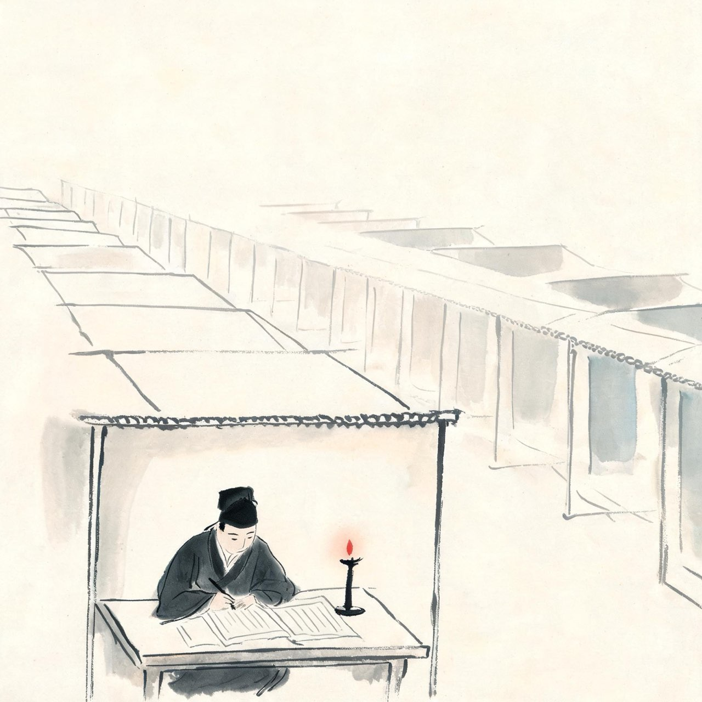
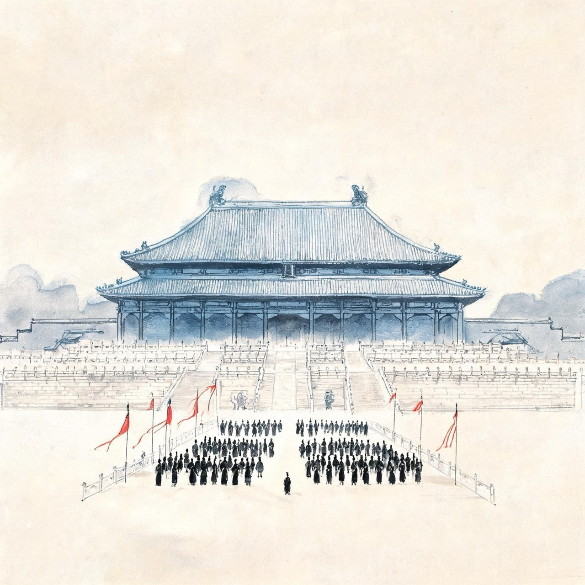
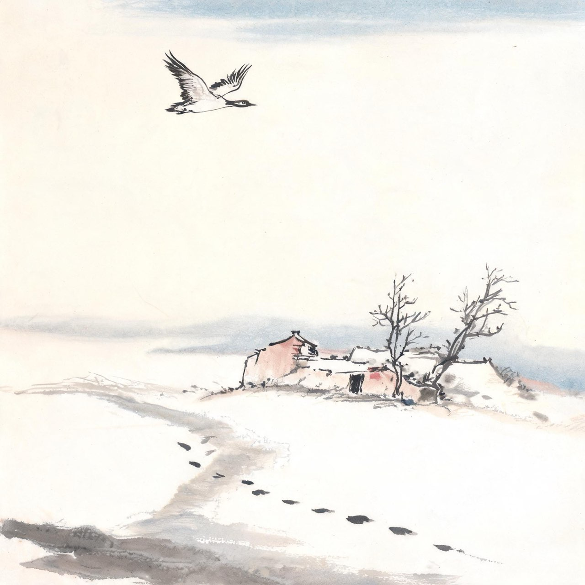
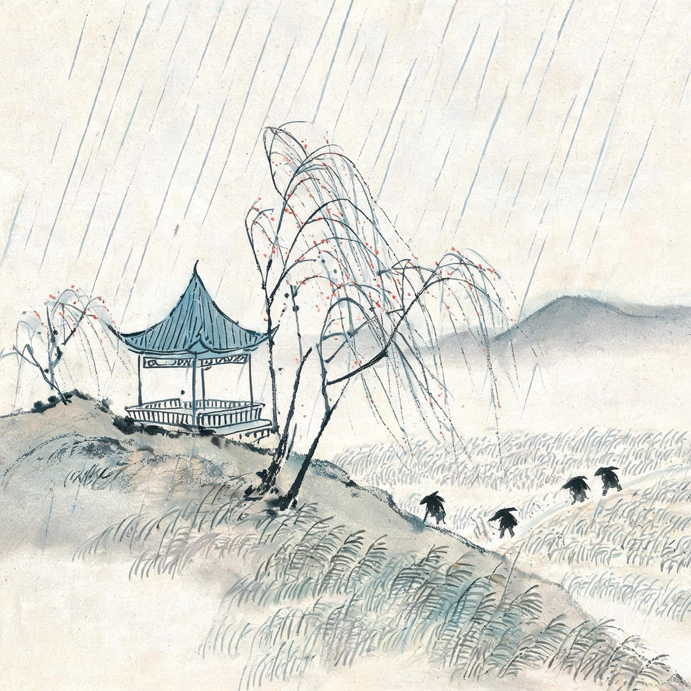
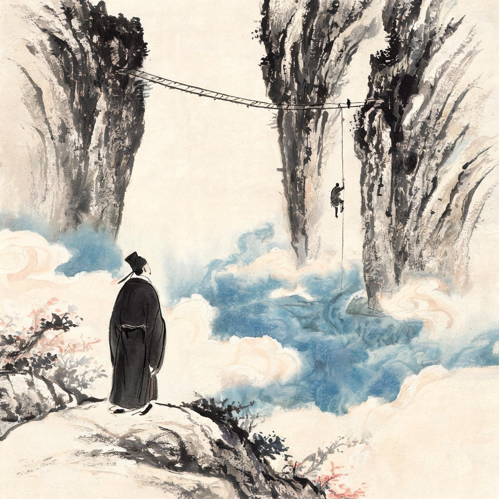

苏轼 · 1056-1066
名动京师
雪泥鸿爪

一篇文章惊欧阳修
嘉祐二年，礼部试。作文题：《刑赏忠厚之至论》。
六百字的策论，没有一个生僻典故，说尽了赏罚与仁心的分寸。主考官欧阳修读到，眼睛一亮，拍案叫绝，提笔就想取为第一。
但转念一想：写得这么好的文章，天下除了自己的学生曾巩，还能有谁？为了避嫌，忍痛降为第二。
发榜之后才知道：这不是曾巩。这是眉山来的、二十出头的苏轼。
注
- 文中尧与皋陶对典故，欧阳修问出处，苏轼答想当然耳——何须出处，传为佳话
事件·出人头地
欧阳修给梅尧臣写信，谈读苏轼文章的感受：
读轼书，不觉汗出。快哉快哉！老夫当避路，放他出一头地也。
一代文宗，天下士林领袖，说自己要给一个二十出头的年轻人让路。这句话后来凝成一个成语——出人头地。
欧阳修还预言：三十年后，没有人再谈论老夫。文章之道，从此属于苏轼。
母丧
进士及第的荣光还没有散去，噩耗从蜀地传来：母亲程夫人病故，四月。
刚刚金榜题名的父子三人，连面都没来得及见母亲最后一面。苏轼苏辙随父亲仓皇回乡，按礼制守孝二十七个月。
少年时，她教他读《范滂传》，问他：你能做范滂，我能不做范滂的母亲吗？
如今他有资格问她了，她却不在了。
这是命运第一次出手。此后一生，每逢他人生的高处，命运总要在同一刻抽走点什么。

制科百年第一
嘉祐六年，守孝期满，苏轼再入京师，参加制科考试。
制科是天子亲策于廷的特科，比进士难得得多。宋朝开国百年，制科一二等从无人中过——那是虚设的荣誉。苏轼入第三等，这是百年来的最高等。
朝廷授他大理评事、签书凤翔府判官。二十六岁，人生第一个实职。
弟弟苏辙辞不赴任，留在汴京侍奉父亲。兄弟俩平生第一次分离。
注
- 制科三等：宋制一二等虚设不授，三等为实际最高，苏轼为百年第一人

渑池道上
十一月，苏轼赴凤翔上任，苏辙送到郑州，兄弟俩在西门外作别。
这是兄弟俩第一次真正意义上的分别。此后宦海沉浮，聚少离多，思念成了他们之间最常见的状态。
苏轼策马西行，路过渑池。五年前兄弟俩赴京应试，曾借宿县中僧舍，在老僧的壁上题过诗。如今再到渑池，老僧已死，新塔已成，旧题的墙壁也坍坏了。
人生到处，像什么呢？像一只飞鸿落在雪泥上，偶然留下爪印，转眼又飞走了。飞鸿哪里还记得那点爪印，更不会计较东西去留。
他把这层意思写成诗，寄给弟弟。
注
- 蹇驴句自注：往岁马死于二陵，骑驴至渑池
和子由渑池怀旧
人生到处知何似，应似飞鸿踏雪泥。
泥上偶然留指爪，鸿飞那复计东西。
老僧已死成新塔，坏壁无由见旧题。
往日崎岖还记否，路长人困蹇驴嘶。
注
- 雪泥鸿爪：苏轼第一个传世千年的自铸名喻，此后成为汉语固定成语
- 老僧：渑池僧奉闲；旧题：嘉祐元年兄弟赴京时同题寺壁之诗

凤翔签判
凤翔在关中西境，靠近边塞。签判任上，苏轼干得有声有色。
到任第二年，关中大旱。他带着百姓到太白山祈雨，得雨，于是在官舍北面修了一座亭子。亭子落成那天，雨也来了，百姓欢呼于庭。
他给亭子取名：喜雨亭。
上任不久，他也结识了一个终生纠缠不清的人——章惇。两人同游南山，这个故事，留到命运翻牌的时候再讲。
在凤翔，他还遇上了顶头上司陈公弼，一个故意压制他的严厉上司。年少气盛的苏轼没少顶撞，多年后才明白老人的苦心，为之作传追悔。
注
- 与陈公弼冲突及晚年追悔：见苏轼《陈公弼传》自述
喜雨亭记（选段）
亭以雨名，志喜也。古者有喜，则以名物，示不忘也。
亭子落成，恰逢大雨，他只取记中最得意的四句：
忧者以喜，病者以愈，而吾亭适成。
二十六岁的苏轼，笔下已有大家气象：为官一任，喜雨与民同。
注
- 此文为苏轼凤翔任上代表作，与民同乐之志初露

章惇题壁
在凤翔的山水间，苏轼与章惇结伴同游。
行至仙游潭，下临万仞绝壁，横木架桥，极险。章惇请苏轼过桥去，在石壁上题字。苏轼不敢。
章惇微微一笑，平步过桥，垂索挽树，在对面石壁上大书：苏轼章惇来。
苏轼抚着他的背叹：君他日必能杀人。
章惇问：为什么？
苏轼说：能自判命者，能杀人也。
两人都笑了。三十五年后，这个敢在绝壁上题字的人，把苏轼一路贬到了天涯海角。
注
- 此则轶事见于宋人笔记，为苏章恩怨的著名伏笔，细节属笔记家言
亡妻
治平二年，王弗在汴京病逝，年方二十七。
她嫁给他十二年。少年夫妻，从眉山到汴京到凤翔。她在他读书时陪在旁边，终日不去；他与人应酬说话，她立在屏风后听，客人走后提醒他：这个人说话模棱两可，一味顺着你说，何必跟他说这么多。
她走后，他把她的灵柩送回眉山，葬在母亲坟旁的山坡上。山坡上，他亲手种下三万棵松树。
十一年后，密州的一个深夜，他会梦见她。醒来时，泪湿枕巾。
那是后话。此刻他只是在墓志铭的最后写下一句：君与轼琴瑟相和仅十年。
注
- 屏后听语：出自《亡妻王氏墓志铭》原文，非传说
- 三万松树：墓志铭言手植三万株，即后来短松冈意象的由来
事件·扶柩还乡
治平三年，父亲苏洵病逝于汴京，年五十八。
苏轼苏辙扶柩溯江还蜀，居丧守礼。至熙宁元年守丧期满，两兄弟携家再出川，还朝。
蜀道从此成了归途的绝唱。此后四十年宦海奔走，苏轼再没有回过眉山。
而汴京早已变天：王安石拜参知政事，新法即将铺天盖地而来。
注
- 苏洵卒于治平三年四月，年五十八